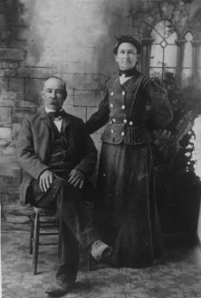
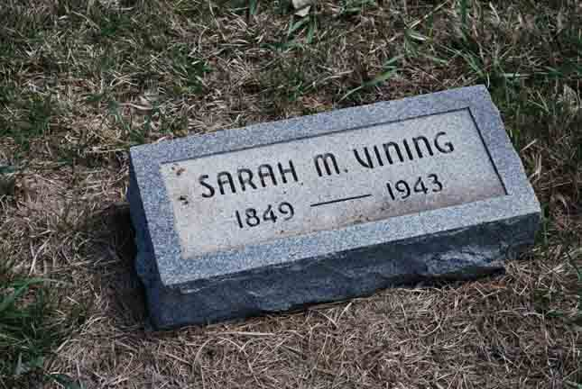
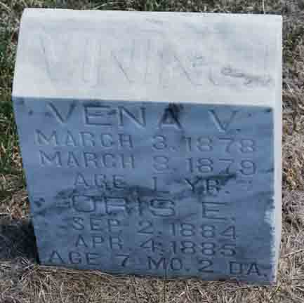

Documentation for William Harmon Vining - Sarah Margaret Ridenour
Family Data
William Harmon Vining and Sarah Margaret Ridenour:

Death Data
Gravestone for Sarah Margaret (Ridenour) Vining, in Deaver Cemetery, Furnas County, Nebraska (from Find A Grave):

Headstone for Vena Viola and Oris Ella Vining, daughters of William Harmon Vining and Sarah Margaret (Ridenour) Vining, in Deaver Cemetery, Precept, Furnas County, Nebraska (from Find A Grave):
